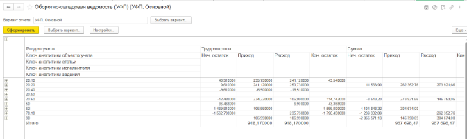

← Назад к функциям
Срок проведения: Лучше всего следить за процессом в конце месяца, например, с 14 по 15 число.
Описание
Незавершенное производство может быть завершено когда-нибудь или не завершено вовсе. В последнем случае его следует списать.
Ответственность за выполнение работ лежит на ВПС, а мы осуществляем контроль за процессом.
Важно учитывать риски при оценке объема работ. Если они превышают запланированные, необходимо либо согласовать изменения, либо пересмотреть оценку.
Работа в ЕИС
Для оценки НЗП можно воспользоваться отчетом Оборотно-сальдовая ведомость (УФП). Путь: Проекты—>Отчеты.
Оборотно-сальдовая ведомость (УФП)
Ссылка: e1cib/app/Отчет.УФП_ОборотноСальдоваяВедомость?stngs=6a4422c5-842a-400c-8ee5-6841737fce39

Счета учета
- Счет 20.10 – Приход осуществляется за счет записанных ЕО (включая черновики). Расход формируется по документам Реестр выполненных работ. Если этот реестр утвержден, часы списываются и принимаются. Однако они могут не быть выставлены на оплату.
- Счет 20.20 – Если реестр выполненных работ утвержден, на его основе готовится Реестр работ к оплате, который отражается на счете 20.10 Расход и на счете 20.20 Приход. На счете 20.20 разбираемся с РПС, почему завис остаток! Вероятно было выставлено клиенту меньше, чем потратил методолог. Если работы никогда выставлены не будут, то необходимо попросить РПС списать в расходы часы, чтобы не отвлекали при анализе.
- Счет 20.40 – Если в Реестре работ к оплате указан вид оплаты Без оплаты, то это отражается на счете 20.40 (чистые потери).
- Счет 20.60 – Служит для учета реестра работ к оплате с видом оплаты К оплате по колонке Приход. Расход по этому счету осуществляется за счет Реализации товаров и услуг, что приводит к возникновению выручки.
- Расходы по РФП (по проекту) отражаются на счете 20.10.